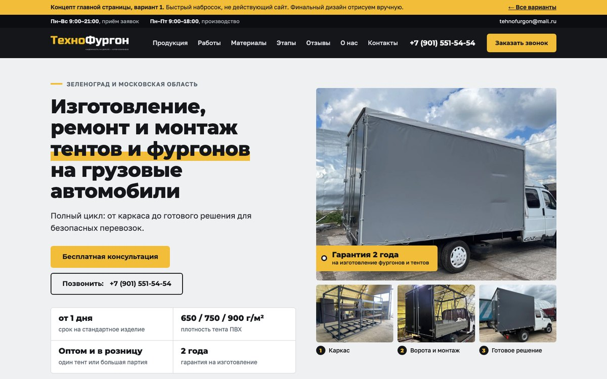
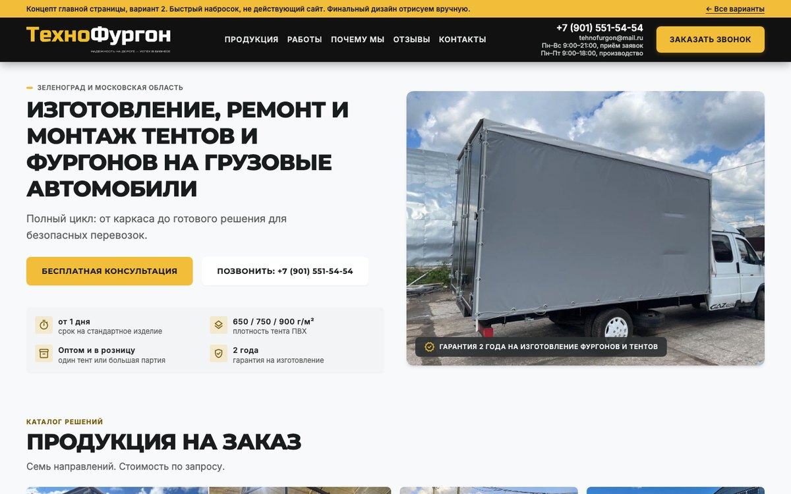
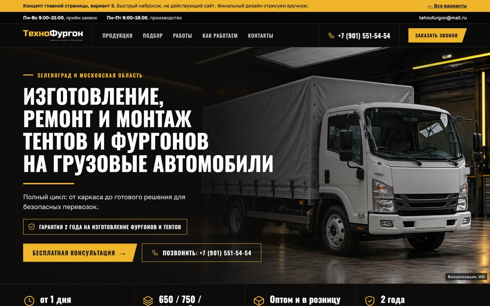

Главная страница Технофургона: три концепта
Мы изучили действующий сайт и собрали три варианта главной. Задача набросков простая: показать, как может выглядеть первый экран, каталог и заявка, если поставить вперёд фотографии изделий и сократить тексты. Все тексты, цифры и контакты взяты с действующей главной страницы.
Это черновики. Выбранное направление отрисуем вручную: со своей сеткой, графикой и вашими фотографиями.

Светлый каталог
Светлый фон, ваши фотографии и семь направлений продукции в одной сетке. Этапы от каркаса до готового кузова, блок материалов и форма, где изделие выбирается одним нажатием.
Чем сделанClaude (Anthropic): дизайн и вёрстка написаны кодом вручную, без конструктора Открыть вариант 1
Строгий производственный
Тёмная шапка, крупный первый экран с фотографией и четырьмя фактами. Семь направлений в одной сетке, примеры работ с ценами и заявка внизу страницы.
Чем сделанGoogle Stitch: макет сгенерирован нейросетью, потом тексты и фото поправлены кодом Открыть вариант 2
Тёмный имиджевый
Тёмная страница с единым стилем съёмки и блоком «Подберите решение»: автомобиль, изделие и материал в три шага. Часть изображений здесь сгенерирована нейросетью как пример стиля.
Чем сделанHiggsfield: изображения сгенерированы нейросетью, страница собрана кодом в Claude Открыть вариант 3Что поменяли относительно действующей главной
Сейчас главная занимает около 13 экранов прокрутки на компьютере. В набросках та же информация помещается в 6–8 экранов.
Первый экран отвечает, что вы делаете
Заголовок называет тенты и фургоны, рядом кнопка бесплатной консультации и телефон.
Каталог открыт сразу, без вкладок
Семь направлений с главной в одной сетке, у каждого фотография и короткое описание.
Фотографии изделий вместо длинных текстов
Тексты сокращены до одной-двух строк, подробности уходят на страницы услуг.
Телефон и заявка всегда под рукой
На телефоне внизу закреплены кнопки звонка и заявки.
Одна короткая форма
Что нужно, имя и телефон. Ничего не перекрывает содержимое страницы.
Работы с ценами и отзывы стоят выше
Примеры с ценой и отзывы клиентов видны до формы, а не в самом конце.
Как смотреть
Откройте с телефона
У каждого варианта есть версия для телефона. Откройте ссылку на смартфоне или сузьте окно браузера.
Сравните первый экран
Понятно ли за пять секунд, что вы производите и как оставить заявку.
Скажите, что ближе
Можно собрать финальный дизайн из частей разных вариантов.